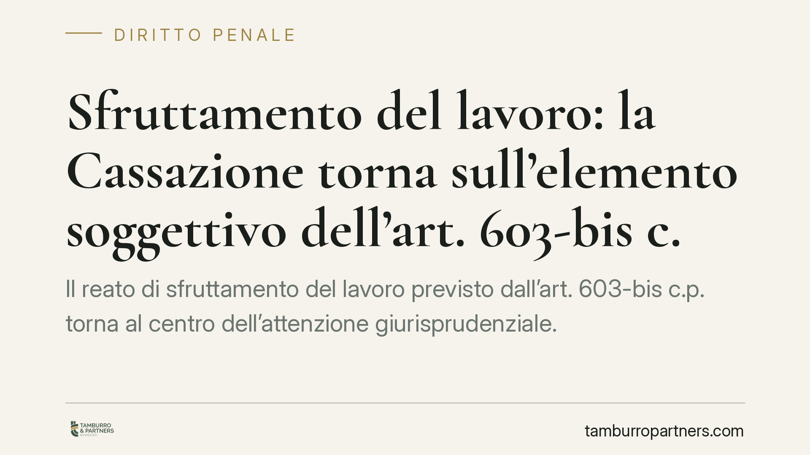

Sfruttamento del lavoro: la Cassazione torna sull'elemento soggettivo dell'art. 603-bis c.p.
Il reato di sfruttamento del lavoro previsto dall'art. 603-bis c.p. torna al centro dell'attenzione giurisprudenziale. Il punto controverso riguarda l'elemento soggettivo: quanta consapevolezza serve per rispondere del reato e quale rilievo abbia la condizione di vulnerabilità del lavoratore. Un tema che interessa da vicino le imprese di ogni settore, non solo l'agricoltura.

Il caso e la cautela d'obbligo
La vicenda che ha riacceso il dibattito riguarda un laboratorio di camiceria, dove alcune operaie sarebbero state impiegate con retribuzioni ridotte e condizioni di lavoro degradanti. La pronuncia richiamata dalle cronache (indicata come Cass. pen. n. 20151/2026) è, allo stato, un riferimento da verificare: la datazione e il numero non risultano ancora controllabili nelle raccolte ufficiali. Trattiamo quindi il principio con la prudenza che merita, richiamando il quadro normativo consolidato e la giurisprudenza già stabilizzata.
Inquadramento normativo
L'art. 603-bis del codice penale punisce chi recluta manodopera per destinarla al lavoro presso terzi in condizioni di sfruttamento, approfittando dello stato di bisogno dei lavoratori, nonché chi utilizza, assume o impiega tale manodopera nelle stesse condizioni.
La norma individua indici oggettivi dello sfruttamento, tra cui: la reiterata corresponsione di retribuzioni difformi dai contratti collettivi o comunque sproporzionate; la violazione sistematica della normativa su orario di lavoro, riposi e ferie; la violazione delle norme in materia di sicurezza e igiene; la sottoposizione a condizioni di lavoro, metodi di sorveglianza o situazioni alloggiative degradanti.
Sul piano dell'elemento soggettivo, la giurisprudenza discute proprio del rilievo dello sfruttamento e dell'approfittamento. Una parte degli orientamenti tende a valorizzare la consapevolezza dell'agente di impiegare lavoratori in condizioni indicative di sfruttamento, senza esigere uno scopo specifico di profitto ulteriore. Si tratta di un profilo delicato: non va presentato come definitivamente pacifico, perché la ricostruzione dell'elemento psicologico resta oggetto di confronto interpretativo.
Lo stato di bisogno e la vulnerabilità
Un punto merita chiarezza. L'art. 603-bis richiede l'approfittamento dello stato di bisogno, che deve essere accertato dal giudice. La condizione di irregolarità del soggiorno, o comunque una situazione di particolare fragilità economica e sociale, costituisce un forte indice di vulnerabilità: agevola la prova dell'approfittamento, ma non integra una presunzione legale automatica. In altre parole, la vulnerabilità del lavoratore rende più agevole la dimostrazione dell'elemento, senza però esonerare l'accusa dall'accertamento in concreto.
Implicazioni pratiche
Il profilo di maggior interesse per le imprese riguarda le strategie difensive. Se l'orientamento più rigoroso sull'elemento soggettivo dovesse consolidarsi, perderebbe efficacia la linea difensiva fondata sull'assenza di un intento di lucro o sulla mancanza di una volontà di sfruttare. Ciò che rileverebbe è la consapevolezza di impiegare persone in condizioni oggettivamente riconducibili agli indici di legge.
Va inoltre segnalato l'ampliamento applicativo della fattispecie oltre il tradizionale caporalato agricolo. Il perimetro del reato investe oggi settori come la logistica, la ristorazione, i servizi e i laboratori manifatturieri. Nessun comparto può considerarsi estraneo al rischio.
Le conseguenze non sono solo penali. Un accertamento di sfruttamento può innescare profili risarcitori verso i lavoratori, contestazioni previdenziali e contributive, misure interdittive e, per gli enti, l'eventuale responsabilità amministrativa.
Cosa fare in concreto
- Verificare la conformità retributiva: è opportuno controllare che i compensi corrisposti siano allineati ai contratti collettivi di riferimento e proporzionati alla prestazione.
- Controllare orari e riposi: occorre accertare il rispetto della disciplina su orario di lavoro, pause, riposi settimanali e ferie, conservando la relativa documentazione.
- Regolarizzare le posizioni: è necessario verificare la regolarità dei rapporti di lavoro e delle posizioni contributive, incluse quelle dei lavoratori stranieri.
- Aggiornare la sicurezza: è opportuno rivedere il Documento di Valutazione dei Rischi (DVR) e le condizioni degli ambienti di lavoro, comprese eventuali soluzioni alloggiative fornite ai dipendenti.
- Documentare i controlli interni: una verifica periodica di conformità, tracciata e datata, costituisce un presidio utile a dimostrare la diligenza organizzativa dell'impresa.
La prevenzione, in questo ambito, non è un adempimento formale: è la misura più efficace per ridurre l'esposizione a un rischio penale in espansione.
---
*Contributo informativo a cura di Tamburro & Partners - Avv. Giuseppe Tamburro. Non costituisce parere legale.*
Ogni condominio ha una storia a sé.
Se gestisci un'amministrazione e vuoi un confronto su una specifica questione condominiale, scrivi allo studio. Ti rispondiamo entro un giorno lavorativo.